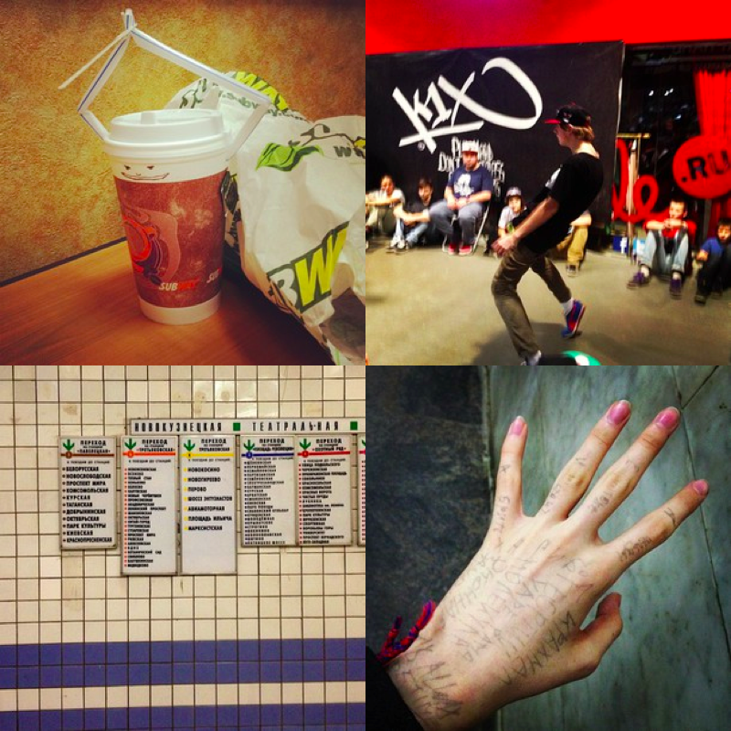
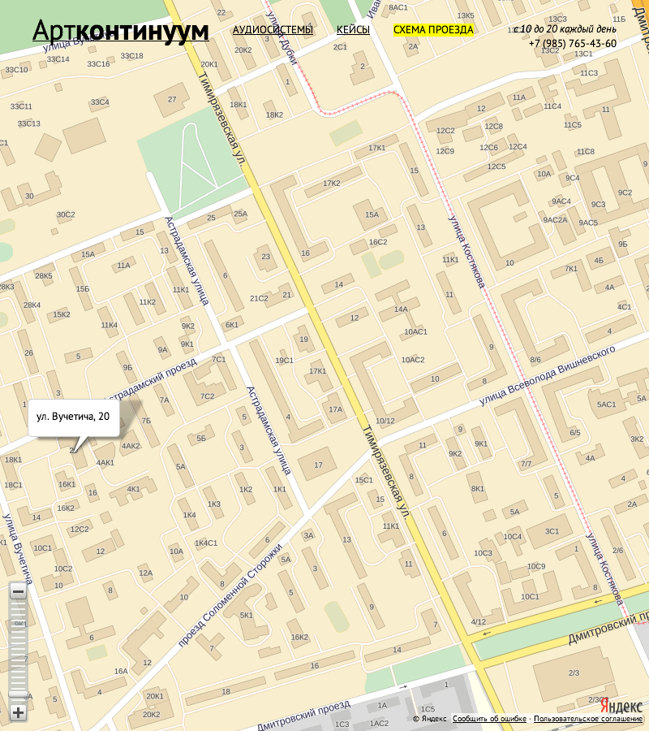

Честное портфолио
Всё подряд, что сделал или сделаю.
скоро

≈Интерфейс, благодаря которому можно смотреть на, интерактировать с, и делиться лентой Инстаграма.
полгода назад
Великолепный публичный терпкий инстаграм.
полгода назад

Первая версия этого сайта.
год назад
Шаблоны для «Артконтинуума». Они делают аккустику и кофры.
2 годa назад

Рисовал обложку для репринта учебника древнегреческого языка Athenaze.
7 лет назад

Идеально передающие атмосферу анимации, тёплая миди-музыка, рюшечки, тени, многоточия, орфографические ошибки.